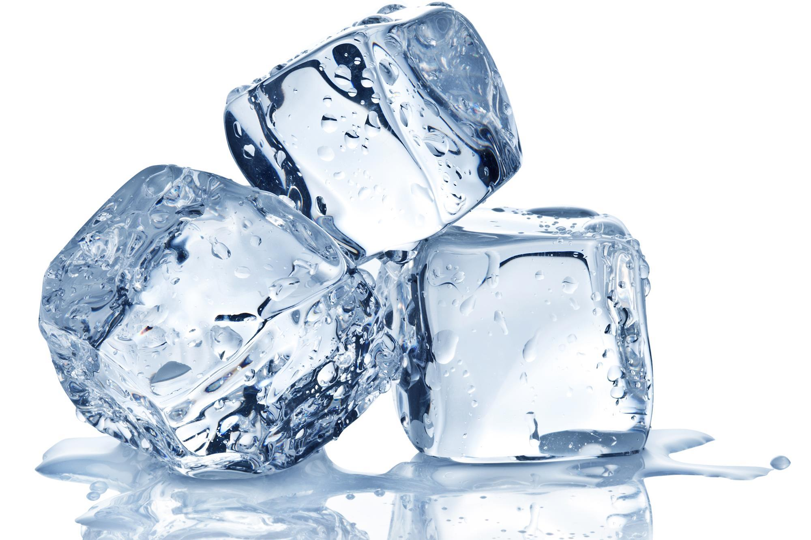

Home

Ice
Ice: the unsung hero of the culinary world, a crystalline marvel forged in the frozen depths of your freezer. Elegant in its simplicity, it elevates any beverage from lukewarm regret to frosty perfection.
Recipe
Prep Time: 5 seconds
Cook Time: 4 hours (unless your freezer has performance anxiety)
Ingridents
- 1 cup water (organic if you're fancy)
- 2 tablespoons water (additional as needed)
Instructions
- Pour water into an ice cube tray. Take a moment to feel like a culinary genius.
- Carefully walk to the freezer like you're carrying a bomb in a movie.
- Place tray in freezer. Close door. Whisper words of encouragement.
- Wait 4 hours or until frozen solid—just like your ex’s heart.
- Pop out cubes and serve in drinks, or throw at friends for a refreshing surprise.
Pro tip: Don't try to flip them like pancakes. They are not pancakes.